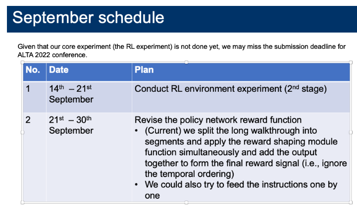
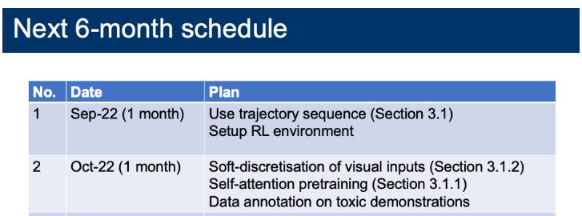
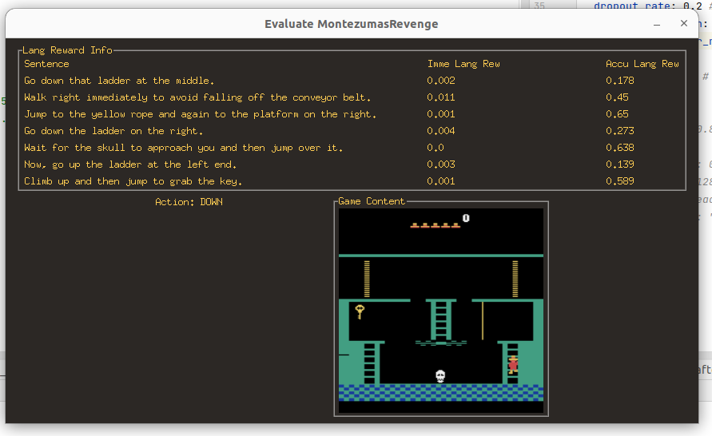
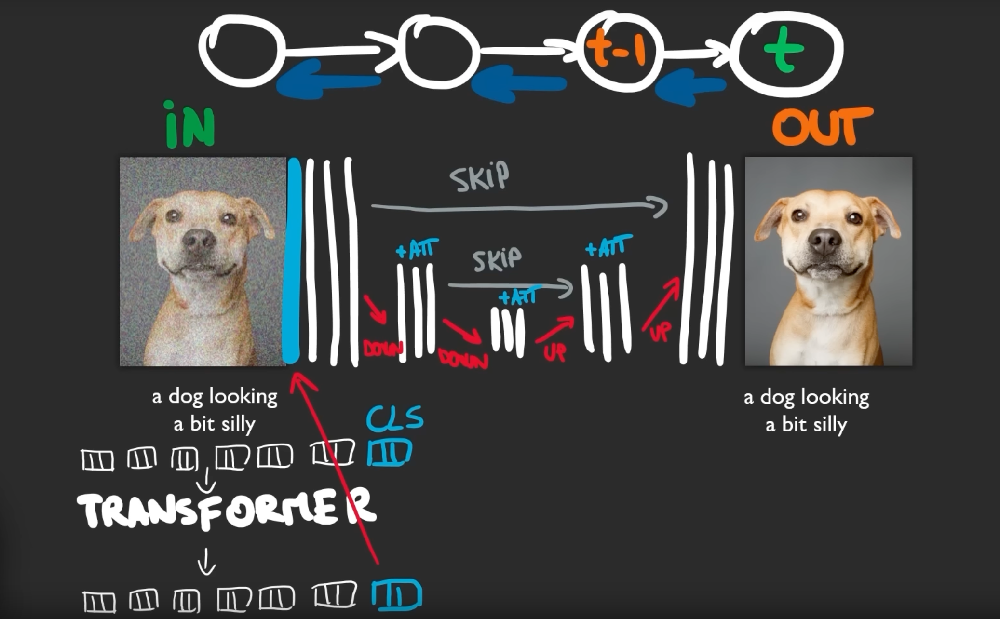
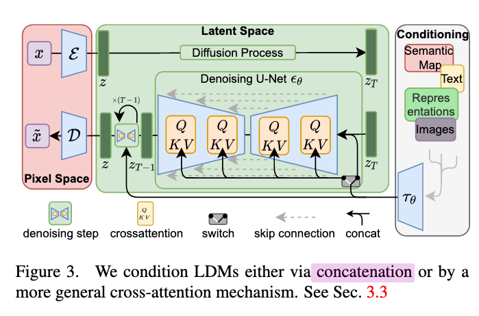
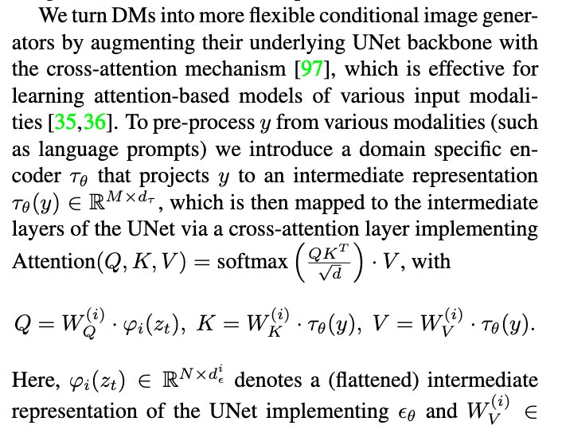
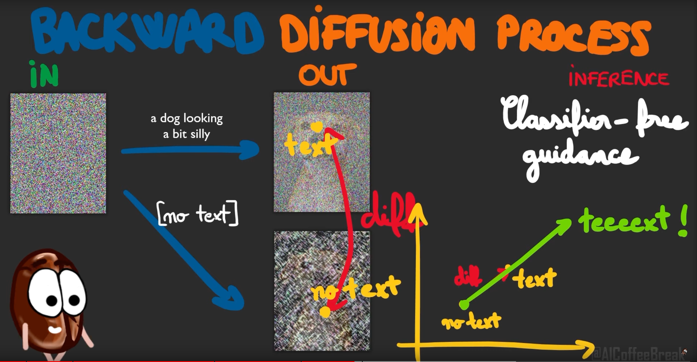
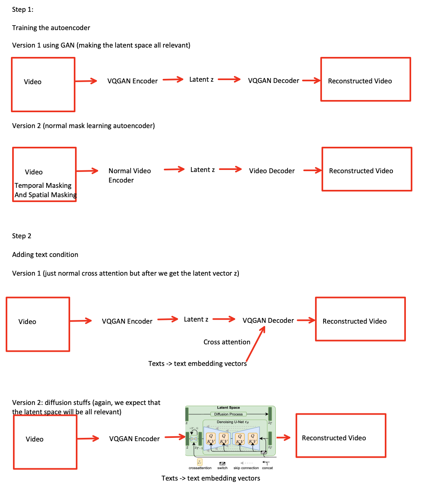
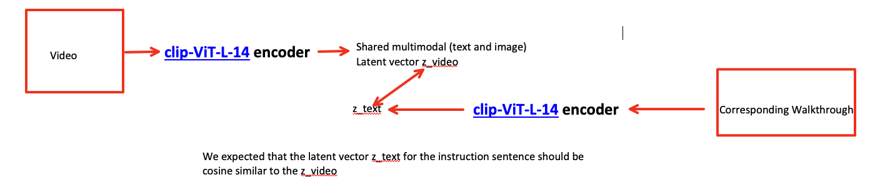

Last Week’s Work Review#
We have the Goyal’s code and we can directly test their model and our baseline
You need password to access to the content, go to Slack *#phdsukai to find more.
Part of this article is encrypted with password:
[TOC]
TODO List#
- Get NLP server machine access
- Set up RL environment and initial evaluation
- Continue testing transformer architecture
- Consider remove action vector input (not working, it means that action info is quite important)
- Set up new RL environment (get the key / escape from the first room)
- Consider the temporal ordering of the sentences


26 Sep – 30 Sep
RL algorithm#
we are going to use asynchronous PPO algorithm from sample factory library
https://github.com/alex-petrenko/sample-factory
we can check this implementation code from IGLU-2022 for reference
https://github.com/iglu-contest/iglu-2022-rl-baseline
DUE TO Unknown reason, sample-factory RL cannot handle Atari games quite well
We could test dreamerv2-pytorch
https://github.com/esteveste/dreamerV2-pytorch
We can also start with some standard open source RL library
- RLlib
- DI-Engine (Try this one)
Add threshold to gradually activate each sentence’s reward shaping#
- Note
- The action input info may mislead the reward shaping module, for instance, if you press “DOWN” button when your avatar is NOT at the top of the ladder, the avatar will not do anything, but the “DOWN” action will cause the reward shaping module to believe that the avatar is climbing down
- Threshold: the next sentence is activated only when the accumulated language reward of the previous sentence is larger than 0.2 (hyper-parameter)
- the first sentence is always activated
Following the instruction#
Not following the instruction#
Misleading action input#
19 Sep – 25 Sep
Some thoughts about the current performance#
-
since in this game, the action may not always give the wanted result (e.g., you cannot do anything when the avatar is in mid air)
- so the past action information can still be quite confusing compared to the observation information.
- so how about we remove the action information from the reward shaping module input
- we found out that it is very hard to train the module if we remove the action vector input
- to solve this, we may want to do the observation pretraining together with the action vector (i.e., fuse the image and action info during the unsupervised pre-training session) (DO this in October)
-
other possible improvements
-
Consider the temporal ordering of the sentences (DO THIS THIS MONTH):
-
only start to calculate the sentence reward when the sentence is relevant to the current state.
-
set threshold, when the reward of the current sentence reach the threshold, we then activate the next sentence’s reward calculation.
-
-
consider the region of interests for the visual observation (DO THIS in OCTOBER)
- setup the object based visual encoder
-
Human evaluation: with no action input#

the accuracy for no_action input is about 76% for 200 epochs
- performance dropped
we can see that
-
without the auxiliary support from action information, the module even cannot detect “go down the ladder” behaviour
-
Therefore, a new visual-encoder module should be required so that we can mix the observation info and the action info together (Do this in October)
- check video diffusion model
- check Fire Burns, Sword Cuts: Commonsense Inductive Bias for Exploration in Text-based Games
But it does not mean that having action input info is good for our current architecture#
- the module may be mislead by the action info
- e.g., when you press “down” button while the avatar is not aligned with the ladder, the avatar will get stuck, but the reward shaping module would think that the avatar is successfully performing going down the ladder behaviour due to the action input information.
Additional: ways to inject text into image generation model#
- concatenation with the image input (outdated)

- cross attention


Additional: tricks that help text-image alignment#
- classifier free guidance

- only works in cross attention model
Additional: useful training dataset and frozen models#
- LAION image text pair
- Stable Diffusion model
- T5-XXL text encoder
- [ ] Video - action - text autoencoder architecture preview (Going to implement this in October)#

- Notice that version 1 and version 2 will definitely cause the latent space $z$ to be different, and we do not know which latent space $z$ is better for our task.
- [ ] Video - caption architecture preview (Going to implement this in October)#

- [ ] Other known issues that will be solved in October#
-
Time duration difference of the required actions between the demonstration dataset and ones during RL training phase
-
the actions of the associated instruction in training dataset took 150 frames while during RL training, we may take just 20 frames to complete the required actions
- How to let the reward shaping module unaffected by the time duration
- One solution: random speed up or slow down the training video -> while the semantic meaning remains the same.
-
01 Sep – 18 Sep
Human Evaluation#
Left and right random moving#
- we found out that the module associate the random movement to “wait” word.
- however, the moving left and right action is incorrectly associated with the “avoid falling off the conveyor belt”
Following walkthrough movement#
- The module did not detect the movement for “avoid falling off the conveyer belt”
- maybe it is because this kind of “avoidance” description is not appeared in training dataset
Paper Reading Notes#
-
Oscar: Object Semantic Aligned Pro Training for Vision Language Tasks
- Author: Xiujun Li et. al.
- Publish Year: 26 Jul 2020
- Review Date: Sat, Sep 3, 2022
-
VinVL: Revisiting Visual Representations in Vision Language Models
- Author: Pengchuan Zhang et. al.
- Publish Year: 10 Mar 2021
- Review Date: Sat, Sep 3, 2022
-
Language Models as Zero Shot Planners: Extracting Actionable Knowledge for Embodied Agents
- Author: Wenlong Huang et. al.
- Publish Year: Mar 2022
- Review Date: Mon, Sep 19, 2022
-
Fire Burns, Sword Cuts: Commonsense Inductive Bias for Exploration in Text Based Games
- Author: Dongwon Kelvin Ryu et. al.
- Publish Year: ACL 2022
- Review Date: Thu, Sep 22, 2022
-
- Author: Jonathan Ho et. al.
- Publish Year: 22 Jun 2022
- Review Date: Thu, Sep 22, 2022